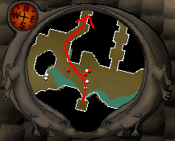
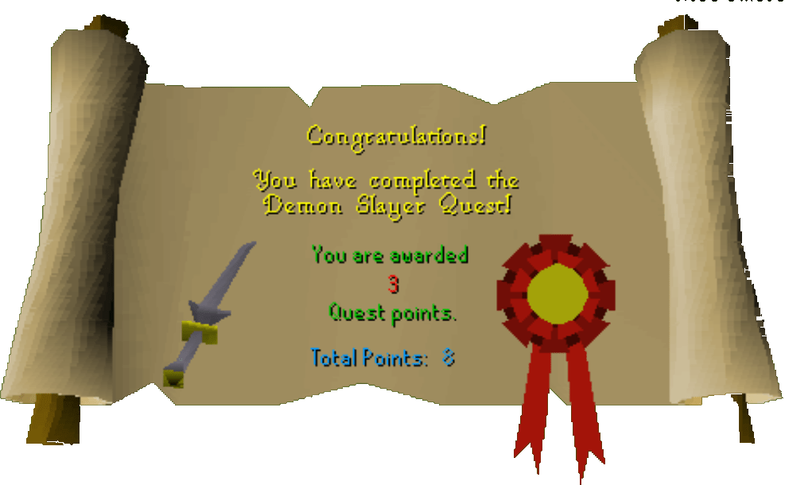

Demon Slayer
Description: A mighty demon is being summoned to destroy the city of Varrock. You find out you are the one destined to stop him.(or at least to try)Difficulty: Novice
Length: Medium
Items & Skills Needed:
Recommended:
- 41 Combat (avoids aggro from level 20 Dark Wizards)
Reward: 3 Quest points, Silverlight (which is useful for weakening any kind of demon)
Instructions:
Talk to the Gypsy in her tent and pay her a coin to reveal the future to you. She'll do her thing and tell you that Delrith has been released. She also says that you're the only one who can stop him. She goes on into some history of Delrith, then tells you to see Sir Prysin in Varrock castle. Make sure you ask what the magical incantation is. You don't need to write it down if you're following this guide.
Sir Prysin is in the southwest side of the castle. Ask him about Silverlight and learn that he needs three keys to unlock the chest containing Silverlight. He'll tell you to talk to Captain Rovin on an upper floor of the castle.
Go upstairs and find the Captain and talk until he gives you his key.
Sir Prysin dropped a key down the drain also (what a klutz), so head to the most northeast room and go upstairs, grab a bucket, go back down, and fill it from the sink.
Use the bucket of water with the drain, then hurry down into the sewers through the manhole, head north a short distance, and you should find the key in no time.
Note: Drain Key will reset if you take too long to get to sewer, just re-pour water down the drain.


Get/collect your 25 bones and head to the 2nd floor of the Wizards' Tower. Talk to the Wizard Traiborn to get your 3rd key after some bumbling about dumb stuff.
Teleport or walk back to Varrock. Go talk to Sir Prysin with all 3 keys and you get Silverlight from him at long last.
Head out the south gate of Varrock to the dark wizards' stone circle. Wield Silverlight and charge at Delrith full force. Fight him until his health bar is fully depleted. There'll be a cool animation of him half sucked in the vortex from where he came.
Choose "Carlem Aber Camerinthum Purchai Gabindo" to banish the demon. If you pick the wrong incantation, you'll have to fight Delrith again until you succeed.
Once he's gone (Congratuations) you're done and you get the reward.
Congratulations, Quest Complete!

This quest guide was written on RuneHQ by Gnat88. Thanks to Keystone, Nitr021, Pirate Bob49, pokemama, and Sythion for corrections.
This quest guide was entered into the database on Tue, Mar 02, 2004, at 09:46:46 PM by Weezy and CJH and was last updated on Fri, Sept 26, 2025, at 08:53:32 PM by Halogod35.